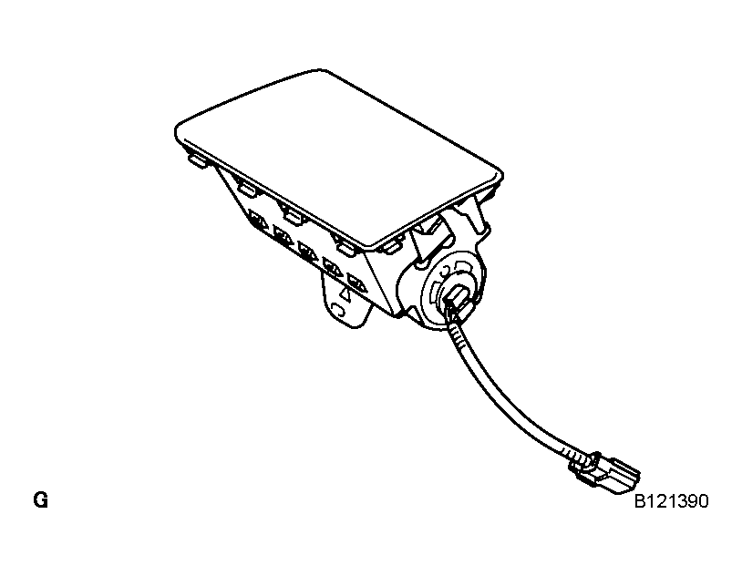

On-Vehicle Inspection
- CHECK FRONT PASSENGER AIRBAG ASSEMBLY (VEHICLE NOT INVOLVED IN COLLISION AND AIRBAG NOT DEPLOYED)
- Perform a diagnostic system check (see DTC CHECK / CLEAR ).
- With the front passenger airbag installed on the vehicle, perform a visual check:
Check for cuts, cracks or discoloration on the front passenger airbag surface and in the grooved portion.
If any of the defects mentioned above are present, replace the front passenger airbag with a new one.
CAUTION: For removal and installation of the front passenger airbag, be sure to follow the correct procedures.
- CHECK FRONT PASSENGER AIRBAG ASSEMBLY (VEHICLE INVOLVED IN COLLISION AND AIRBAG NOT DEPLOYED)
- Perform a diagnostic system check (see DTC CHECK / CLEAR ).
- With the front passenger airbag removed from the vehicle, perform a visual check:
- Check for cuts, cracks or discoloration on the front passenger airbag.
- Check for cracks or other damage on the connectors.
- Check for deformation or cracks on the instrument panel and instrument panel reinforcement.
If any of the defects mentioned above are present, replace the front passenger airbag with a new one.

Courtesy of © TOYOTA, LICENSE AGREEMENT TMS1002CAUTION: For removal and installation of the front passenger airbag, be sure to follow the correct procedures.